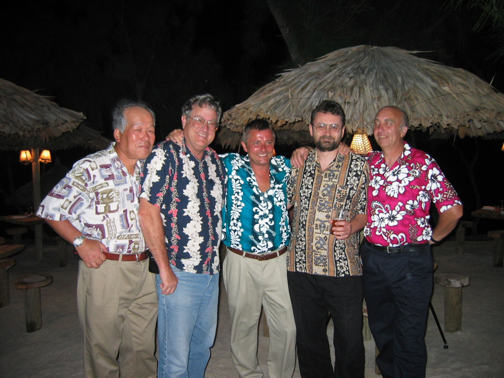
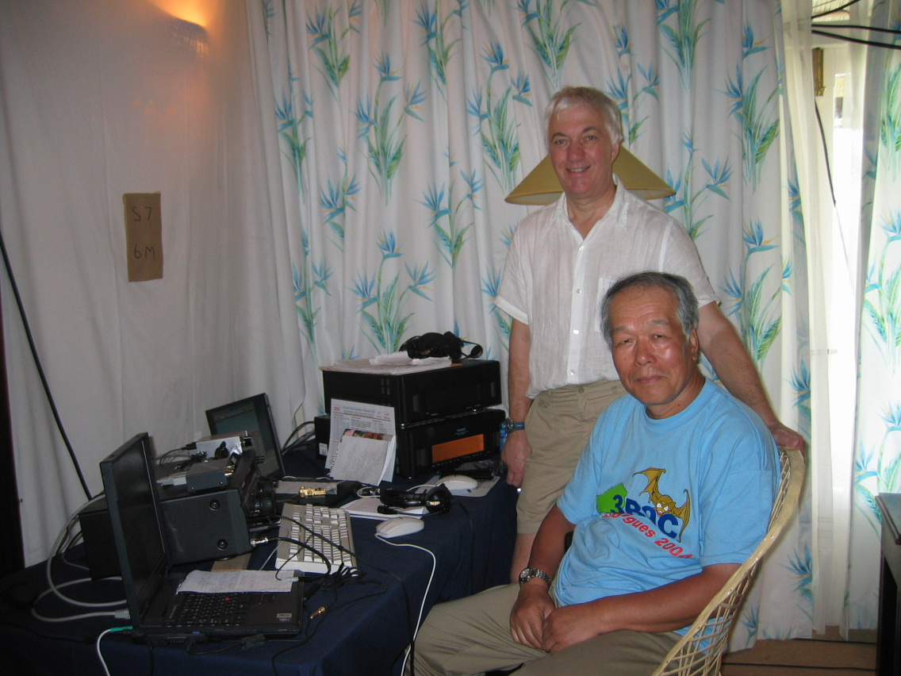
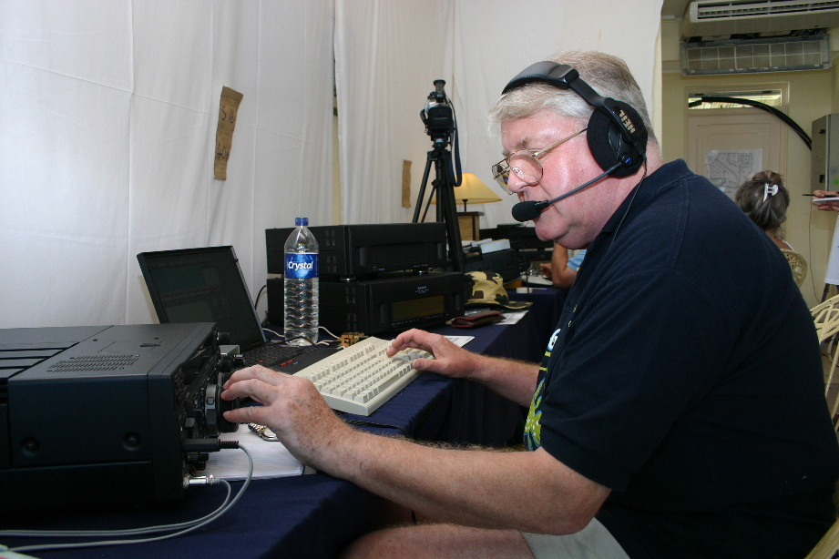
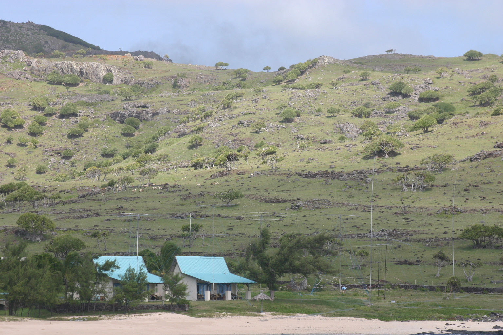
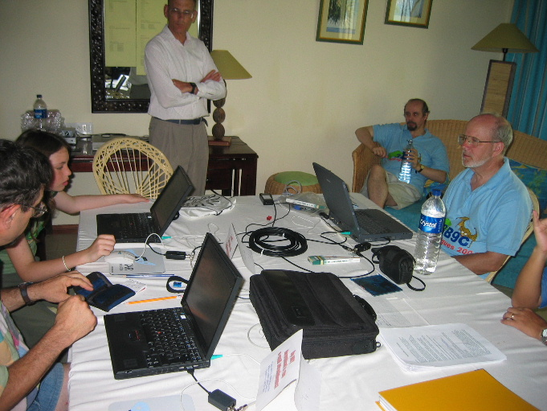
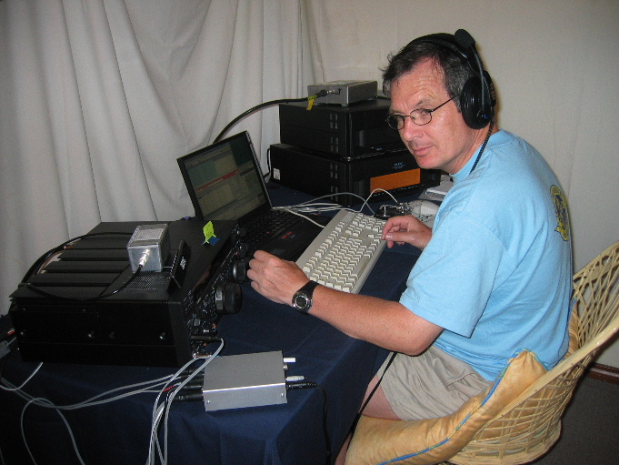
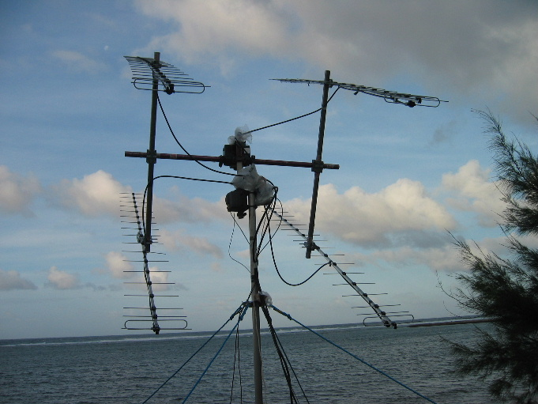
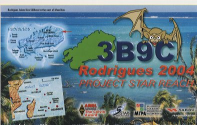
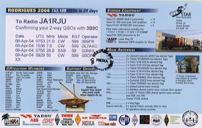

The Five Star DXers Association

FSDXA DXpedition
19.Mar-12.Apr.2004
|
 第一陣の最終日3月31日に前・後半組の引継ぎのパーティーが行われた 左から"勤務"を終え帰国するJA1RJU.N7CQQ.GU4YOX.DK7YY.G3XTT 
 運用は2棟のコテージから/G3SED(後ろ)と50MHzサイトで
  (左)運用中のリーダー・G3NUG/(右)運用場所を海側から見る(写真・JH4RHF)
  "勤務"を外れているメンバーは休憩室で一休み/運用中のG0OPB
  後半組により430MHz帯のEMEも行われた。19el×4アンテナ/HF帯のアンテナ・ファーム 4面刷りの3B9CのQSL

 
 D68C Homepage |